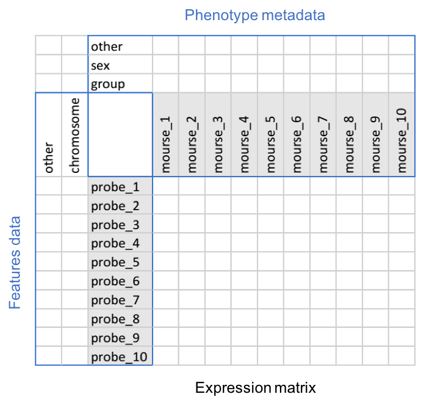

Chances are, you are a biologist looking for tools like R to leverage the data analysis step of your regular workflow or you have a statistical or programming background and want to apply to biology.
The intersection of computer programming, statistics and a particular knowledge domain is called data science. If you are like me, and your domain of application is biology, it would be called computational biology, however, it goes with many different other names. That said, as a computational biologist you are better off following the conventions and best practices of data science. However, as in all applications of data science, there are many data structures, methods and packages that were created specifically to solve problems in biology.
The aim of this tutorial is to take you from the convenience of the spread sheets to the more capable (less comfortable at first though) text-based environment like R where you can manage your data, perform statistics and visualize it at publication level graphs. All in the context of biology.
But first things first, why would you need to do that while excel or Google sheets might just do?
Few reasons:
In R, you can handle bigger data sets efficiently. These data could be produced in your own lab or obtained from public repositories like Gene Expression Omnibus (GEO) or Short Read Archive (SRA) (more on this later). In other words, you can scale up your work/research easily
Perform advanced statistics and use machine learning to gain deeper insights on your data
Interactively explore your data and produce basic and complex publication-level graphs
Communicate your data, analysis and results in a reproducible way
For more information, read an Introduction to R from the R manuals. Introduction to R course on is one of the best places to start learning R, in case you haven’t yet.
First, we will introduce you to some key concepts; these could be an experiment in the field of biology or a statistical method and there implementation R and Bioconductor. Then, we will walk you through some examples and interactive exercises. There are many resources to learn from, so we will refer to some of them.
So why not start by a brief introduction to Bioconductor, and a few more key ideas!
Bioconductor provides tools for the analysis and comprehension of high-throughput genomic data. Bioconductor uses the R statistical programming language, and is open source and open development. It has two releases each year, 1296 software packages, and an active user community.
High through-put biology is the use of automation equipment with classical cell biology techniques to address biological questions that are otherwise unattainable using conventional methods.
Microarrays: A microarray is a multiplex lab-on-a-chip. It is a 2D array on a solid substrate (usually a glass slide or silicon thin-film cell) that assays large amounts of biological material using high-throughput screening miniaturized, multiplexed and parallel processing and detection methods.
Whether you are working with data from your own lab or obtaining it from public repositories, you are most likely striving to impede your experimental design in the data representation or trying to understand what others are investigating in their studies. This is worthy spending time on when designing an experiment or exploring others data. You might be familiar with what tidy data is, although not identical, biologists use similar ways to represent their design and data. For instance, variables might be referred to as samples and observations as features in a biological data.
Think of any experiment in terms of samples and features. Samples are the subjects under study; they could be cell lines, tissues, mice or individual patients. Features are the characteristics you measure about your samples; they could be gene expression, SNPs, body weight or blood pressure. The measurements you get from the machine are the data. Other information you have about samples and features are usually called metadata. Metadata are usually where you encode your experimental design and any previous knowledge you already have, to give context to your study. For instance, you might have two groups of samples; control vs treatment or male vs female. You might have beforehand information/annotation about the genomic locations of the genes you are measuring their expression.
One more thing before go through an example, very often there will be replicates in your study. By convention, you should treat them as separate samples and include a variable in the metadata to keep tracking of which is which. Whether your replicates are biological or technical replicates makes no difference in the way you store them and sometimes even during the analysis. Only when you start interpreting your results, it makes a big different. That’s why you should keep this valuable information as metadata.
Let’s go through a toy example first. Say you are interested in the effect of a particular drug on gene expression in mice brains. Specifically, 10 genes which you know from literature that they exist on two different chromosomes 1 and 2. You got 10 mice (6 females and 4 males), you randomized them equally into two groups (treatment and control). After the experiment was over you received the gene expression data, one measurement per gene in every mouse. What would be a good way to store these data and preserve the information you know about your samples and measurements?
Look what you have first:
10 mice (samples) for each you have 10 gene expression measurements (features)
information about samples; treatment vs control and male vs female
information about features; chromosomal locations
Let’s say you will organize your data in tables.
Put samples in columns
Put features in rows
Use a separate table for each kind of data
You can use 10 x 10 table to store the measurements. Each sample is a column and each gene is a row. Another table to store the metadata (treatment and sex information) about the samples. And a third table to store the metadata about the genes (chromosomal locations). So far you used three tables each of them is connected to at least another one by a row or a column.
It turned out this is a very efficient way to store data. Imagine you have hundreds of samples, for each you have thousands of measurements, this is typical for a high-throughput experiment. At the same time, you collected metadata about the samples, and you have plenty of information about these features from previous studies. Data become bigger in terms of size and dimensions, hence comes the title “Thinking in Multiple Dimensions”, and they no longer fit on a screen or a single excel sheet. The idea of the three-tables connected by and edge (a row or a column) is still applicable and efficient.

Think of your data as a cube. It has multiple surfaces each is a table of data. They share edges which could be a column or a row so each table is linked to at least one other table. This way you can use data from different tables to answer your questions.
The authors of Bioconductor put an effort in creating data structures and containers that are smart and efficient. One of these data containers is the ExpressionSet. It borrows the idea of three-tables to represent the data and metadata of high-throughput experiments such as microarrays.
A main table, or rather a matrix for the measurements with samples in columns and probe measurements (features) in rows. This is called the expression matrix or the assay data
Another table, or a data frame, for the metadata about the samples. This is called the phenotype data
A third table, or a data frame as well, for the metadata (annotation) about the features. This is called the features data
Additionally, it stores information about the experiment, protocol and microarrays platform in experimental data, protocol data and annotation spaces
Let’s see how this works in an R session.
The DataCamp team installed Bioconductor on their platform, so you can explore it without having to worry about installation, although its really easy and will come back to it in a later occasion. In this first exercise, you will need to load an example ExpressionSet called sample.ExpressionSet from the package Biobase using the function data(). An R object is created in your session with the same name and will be accessible for you for the rest of the exercises. After loading the data set, go on and call class() on the object sample.ExpressionSet. Finally, you can use a ? followed by the name of the object sample.ExpressionSet to see a description of the data set before digging deeper into it.
After reading the help file of the data set, you probably have an idea or some expectations of what the object sample.ExpressionSet contains. To inspect an Expression Set, all you need to do is to type the object name in the R console and hit enter, it has a nice print method that shows general information about the set. Go on and do that, then cross reference the output with the description you saw earlier in the help file to see how different information are encoded.
Now you can tell the number samples in this data set, the number of features, the sample names, the types of phenotype data and the kind of chip (Annotation) which was used to generate this data set.
The way you can access the different tables in an Expression Set is to use accessors. These are methods to access certain information or slots in the Expression Set, and they work just like regular R functions by calling them on the name of the ExpressionSet object, like in accessor(ExpressionSet). A common practice is to extract these tables in separate objects before you start exploring and analyzing your data. You will do that to have a closer look on them. Use the accessors exprs and pData to access the expression matrix and the phenotype data, and assign their output to two new objects mat and pdata, in this order. Finally, inspect the class and dimensions of each using class and dim.
Notice how the number of columns in mat equals the number of rows in pdata. The phenotype data are descriptions of the samples in the columns of the expression matrix. Remember there should be a shared edge between the three tables, that’s it. Go on and check the names of the columns of mat and the row names of pdata and see if they are identical.
Similarly, you can extract the metadata/annotation about the features using fData, however the data set doesn’t contain any useful features data.
One nice feature about the ExpressionSet and many other data containers in the Bioconductor is that it is a closed-object. Remember an ExpressionSet encapsulates the data and the metadata from the experiment and they are connected to each other. Once you subset an ExpressionSet, changes are applied on its different slots. Say you only want to get the subset of data from certain samples in your experiment, you only need to subset the ExpressionSet once, then you get a new ExpressionSet with the data and the metadata for these particular samples.
The phenotype data pdata has three variables sex, type and score. You can see that by calling names(pdata). Say you want the subset of data which has a score more than 0.50, you can first create a logical, call it high.score, corresponds to the samples that satisfy that condition and use it to subset sample.ExpressionSet, same way you subset a data.frame in R, call the new ExpressionSet as sub.ExpressionSet.
Now the number of samples, which is the column number of the expression matrix and the row number of the phenotype data, is 12 instead of 24. If you try extracting the expression values and the phenotype data in the new object, there will be only data for samples with a score higher than 0.50.
Now, let’s bring it together and construct an ExpressionSet. You will use the the expression matrix mat and the data frame pdata to do that but it works the same way for the data you would get from a public repository like GEO or generate in your own lab. Costructing an instance of ExpressionSet is as simple as the following two lines of code.
new.ExpressionSet <- ExpressionSet(assayData = mat)
pData(new_ExpressionSet) <- pdataHowever to do that more formaly and to use the full potential of an ExpressionSet, there is another way but requires first to learn about a new class calle AnnotatedDataFrame that is typically used to store the phenotype data and the featuredata. An AnnotatedDataFrame contains two parts; a rgulat data.fram like the one you saw earlier pdata using the accessor pData, the actual data about the samples or the features. Second part is varMetadata, containes a despription of each variable/column in a data.frame with number of rows equal number of columns in pData, and at least one column, named labelDescription.
To construct an ExpressionSet, first you will need to construt an AnnotatedDataFrame using a constructor with the same name and pass it the pdata and var.metadata as first and second arguments. Call it phenotype.data. Then use the constructor ExpressionSet with mat and phenotype.data to the apporpriate arguments. Call the new set as new.ExpressionSet.
To wrap up, you first learned about the relation between computational biology and data science, then why it is important to use a text-based environment like R to handle high-throughput data. Also, you learned about the implemntation of the three-tables notion in the Bioconductor as an ExpressionSet.
There is a lot to learn about expressionset and other Bioconductor data containers. Working with biological data through Bioconductor relies heavily on smart and efficient representation of data. You can read more about ExpressionSet in the help page by typing ?expressionset.